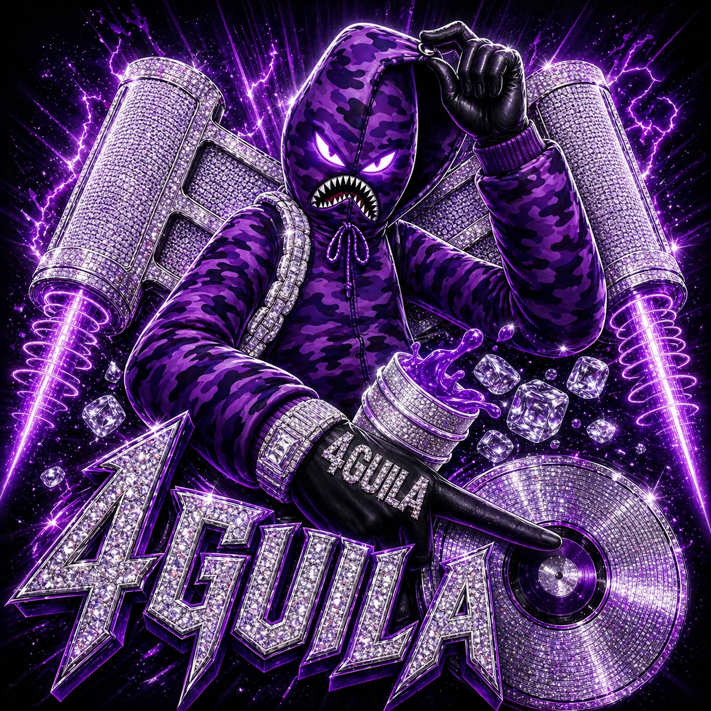

4GUILA / ARTISTA
SPOTIFYMi música.
Escucha a 4guila como artista.
Escuchar al artista
ARTISTA / PRODUCTOR MUSICAL
La música como origen.
La creación como camino.
01 / SPOTIFY
Mi voz y mis producciones.
Dos formas de entrar en mi música.
4GUILA / ARTISTA
SPOTIFYEscucha a 4guila como artista.
Escuchar al artista4GUILA / PRODUCTOR & BEATMAKER
SPOTIFYUna selección de trabajos como productor y beatmaker.
Escuchar producciones02 / VIDEO
CULIGANG · FRAGMENTO DEL VIDEOCLIP
03 / BIOGRAFÍA
RICARDO ANDRÉS GONZÁLEZ LIRA
Productor musical, compositor, beatmaker y cantante. Fundador de 4guila Records.
Su vínculo con la música nace en el folclore chileno. Comenzó como baterista y participó en agrupaciones de cueca y bandas escolares, explorando distintos géneros desde pequeño.
A los 17 años, su primera experiencia en un estudio de grabación lo acercó a la producción musical y definió su camino. Su formación en Producción Musical en el Instituto Profesional Arcos acompaña ese recorrido.
Con 4guila Records busca impulsar a artistas emergentes a través de la producción musical, la dirección creativa y el desarrollo artístico.
Descargar dossier completo ↓04 / CONTACTO
Proyectos, colaboraciones y contacto profesional.
4guila.manager@gmail.com